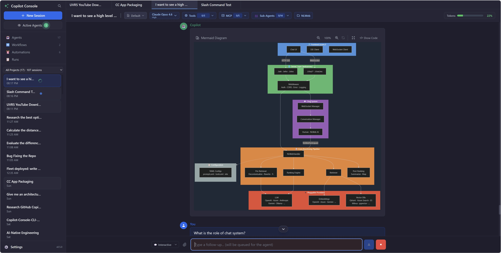
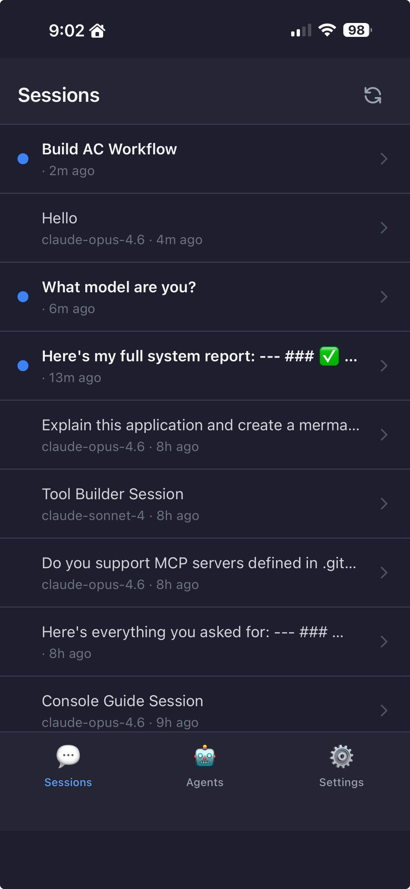

Orchestrate multi-agent sessions, workflows, and automations from a unified control center. Get mobile notifications. Run fleet operations. Browse the web with AI.

Run multiple Copilot CLI sessions simultaneously in a tabbed interface. Each session gets its own system prompt, model, tools, MCP servers, and working directory. Monitor all agents at a glance — no more juggling terminals.

Get push notifications on your phone when any agent finishes. Continue the conversation from mobile — reply, review, or start new tasks on the go. Install as a PWA for a native-like experience.
$ copilot-console --expose --no-sleep
# Scan QR from Settings, done.
Also works for native CLI sessions — get notified when any terminal Copilot session finishes, no Console required. Just enable the CLI hook.
Your agent navigates the web autonomously via a bundled Playwright MCP server. Navigate websites, fill forms, extract data, run UI tests — all through natural language. Watch it work in real-time.
Fire parallel sub-agents with a single /fleet command. Each agent works independently on its piece of the problem. Watch multiple AI streams simultaneously.
/fleet analyze this codebase for security issues
# Spawns parallel sub-agents, streams results live
Sessions automatically group by project folder. Search across all conversations with keyword highlighting. Pin important messages for quick reference. Your AI history, organized the way you work.
Everything you need to orchestrate AI agents at scale.
Reusable agent personalities with custom prompts, models, tools, and MCP servers. Launch sessions from any agent with one click.
Compose agents into teams with automatic delegation. Each sub-agent runs in its own context with specialized tools.
Multi-agent YAML pipelines. Chain agents deterministically — each step's output flows to the next. Watch events stream in real-time.
Cron-scheduled agent runs. Runs dashboard shows all executions — jump into a running agent's chat to watch it work live.
Global and per-session MCP server management. Drop Python tools into a folder — auto-reload, no restart. Built-in Tool Builder agent.
/fleet, /compact, /help — inline chips with auto-complete. Type / to explore.
Works on Windows 10/11. Checks prerequisites, installs dependencies, and sets up everything.
# Install (or upgrade)
irm https://raw.githubusercontent.com/sanchar10/copilot-agent-console/main/scripts/install.ps1 | iex
# Start
copilot-console
# With mobile companion
copilot-console --expose --no-sleep